2026-10-14 · 当前 Electron 主进程 / preload，生产前端构建，临时真实 Focus / Goal SQLite；邻页为只读样例。原始 JPEG，未修图。点击可看全尺寸。主要布局截屏包含少量后续纯状态修正前的版本，不宣称每图都是最后 source hash。
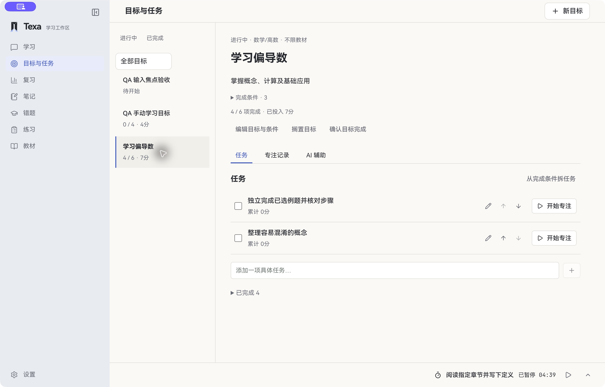
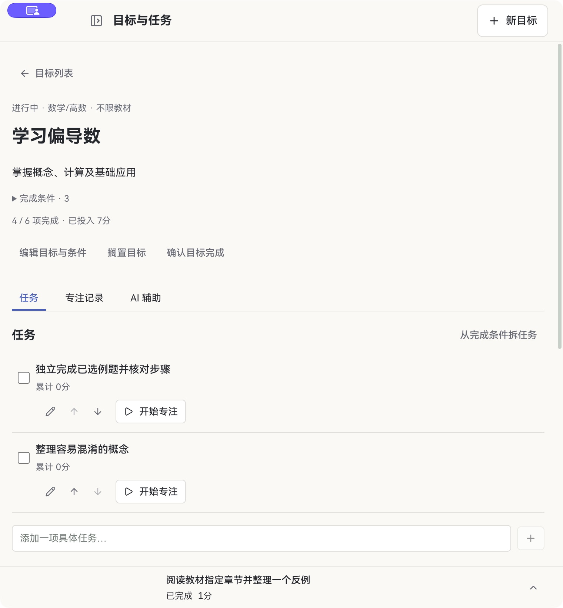
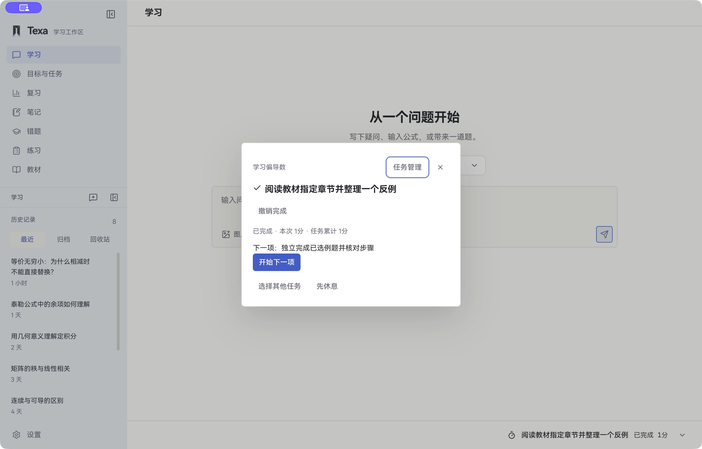
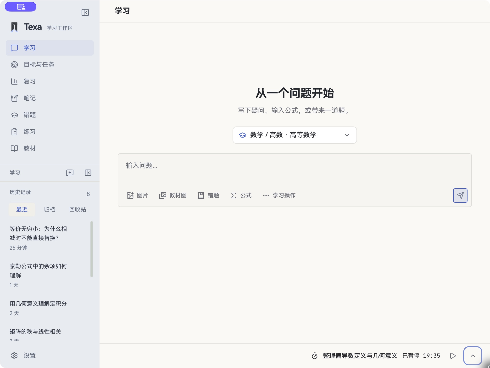
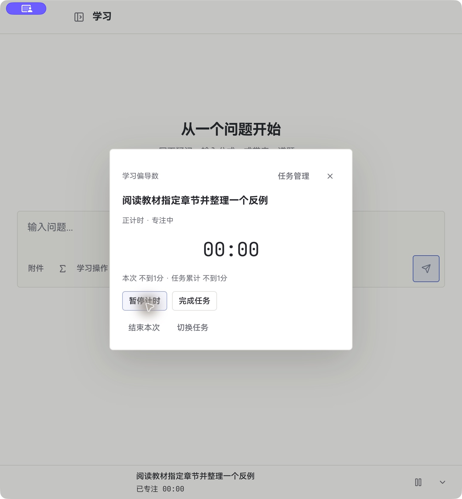
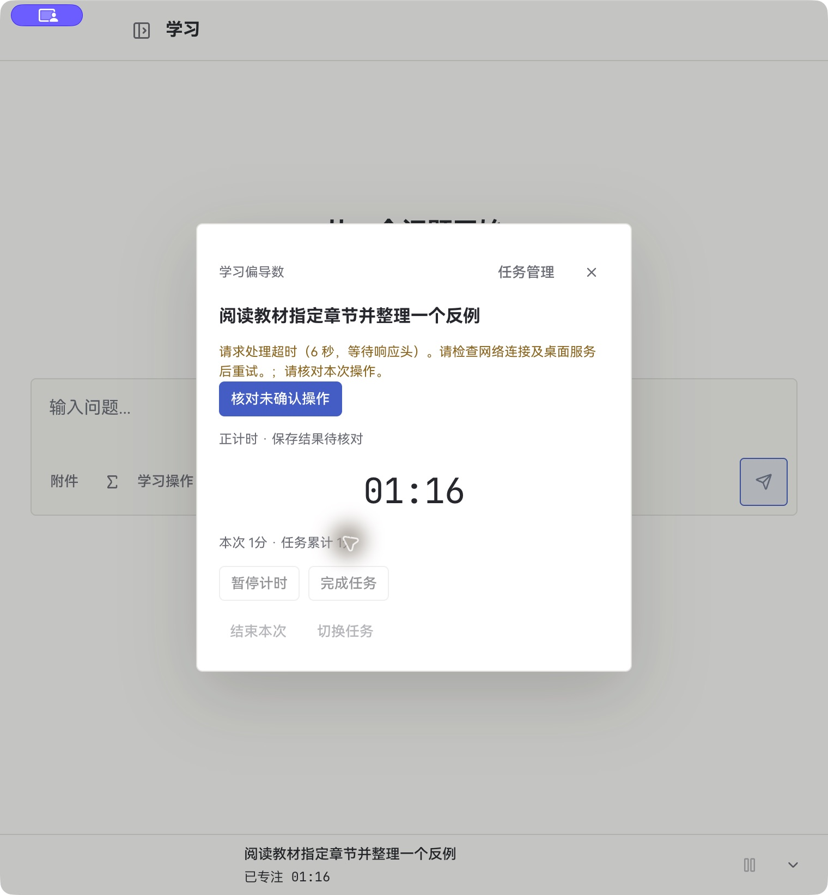
最终构建页面加载通过；前后 task/session ID、running 状态及历史数量一致。教材、复习及练习不是生产数据验收。
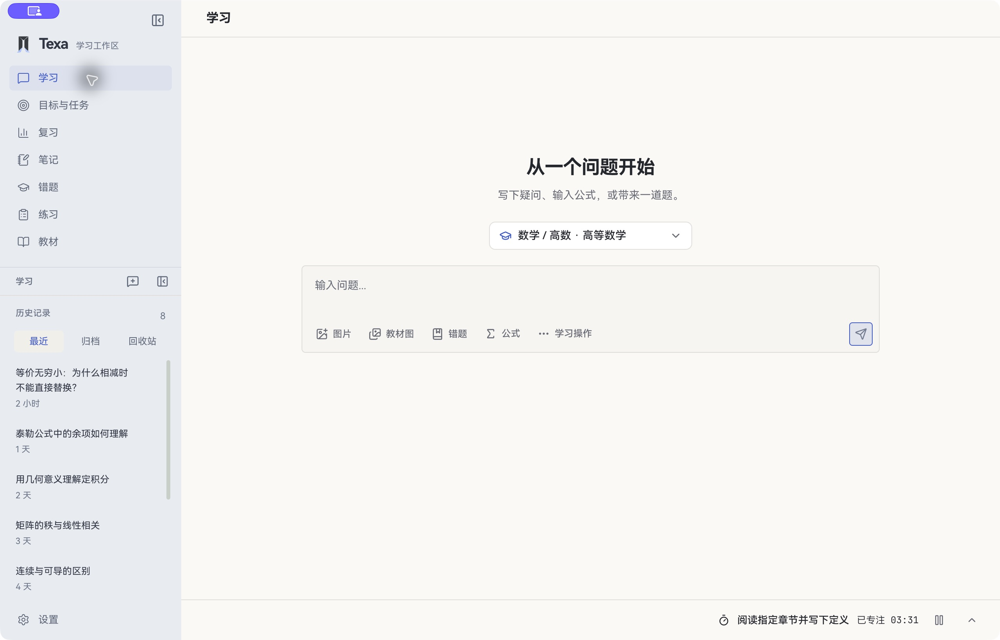
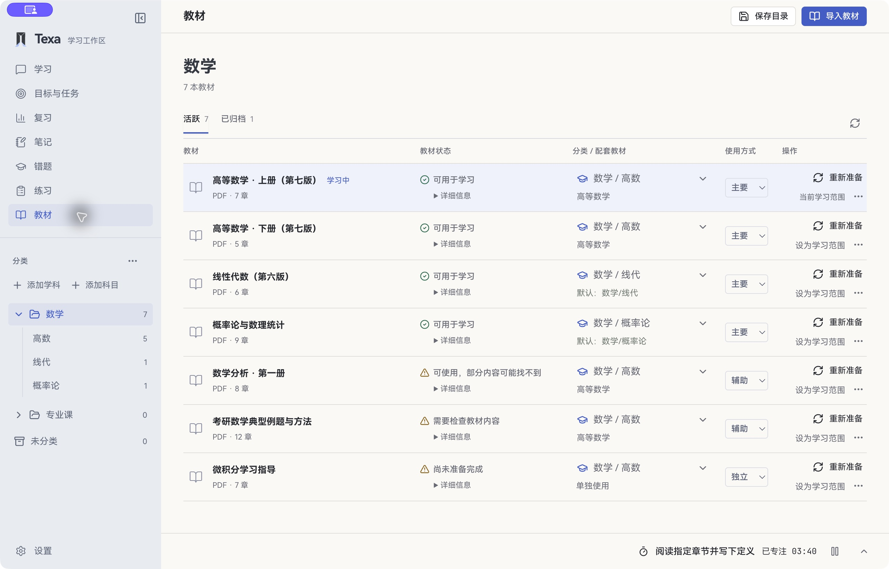
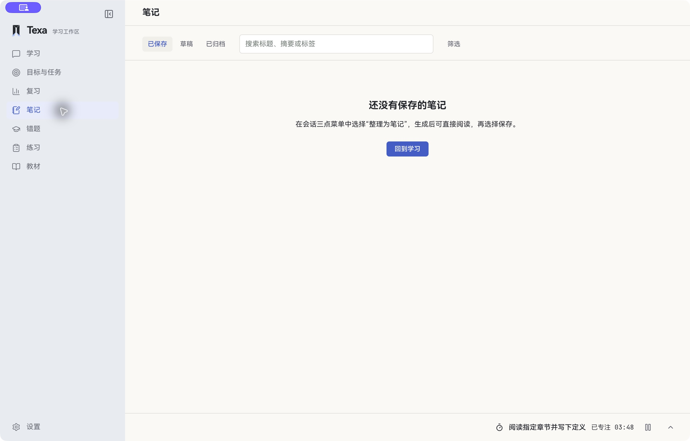
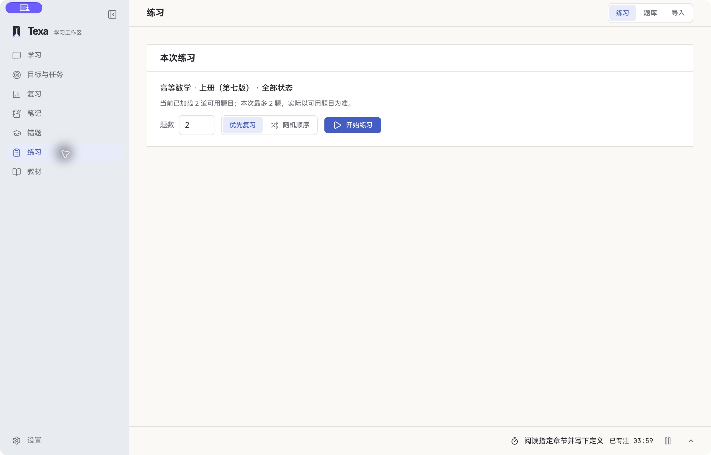
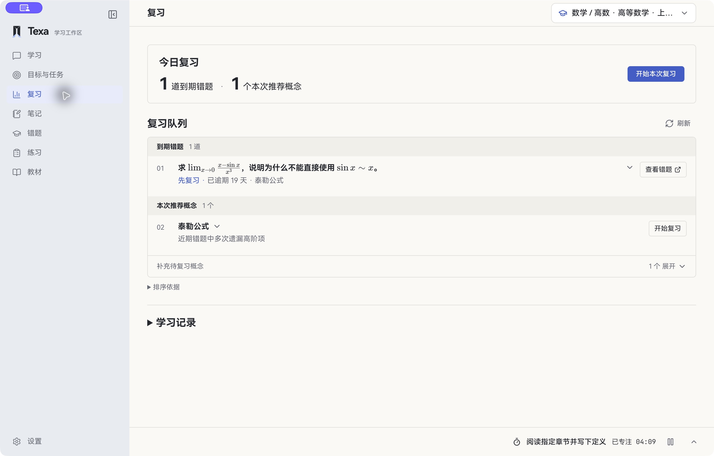